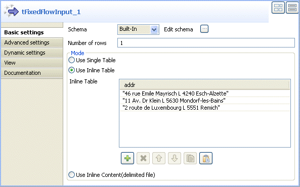

Warning
This component will be available in the Palette of the studio on the condition that you have subscribed to any Talend Platform product.
The address management components discussed here are the result of Talend collaboration with Experian QAS, one of the world leaders for global address data quality.
For more information about the enterprise and its software tools, visit http://www.qas.com.
|
Component family |
Data Quality | |
|
Function |
verifies addresses in a column. It iterates on each row and reads input addresses against data in a Dynamic Link Library (DLL) provided by QAS and installed locally. NotetQASBatchAddressRow uses Batch 4.70. The advantages of this component over the section called “tQASAddressRow” is that it does not call a web service to be able to verify postal address data. This component uses the DLL library installed locally to verify the postal address data and thus optimize performance, especially when dealing with large amounts of data. | |
|
Purpose |
tQASBatchAddressRow corrects any formatting or spelling errors, adds missing data and gives the verification status for each row since the address may not always have enough information to be matched to a single deliverable result in the DLL data. For more information about the verification status, see the section called “QuickAccess verification levels (verification status)”. | |
|
Basic settings |
Schema and Edit schema |
A schema is a row description, i.e., it defines the number of fields that will be processed and passed on to the next component. The schema is either built-in or remote in the Repository. Click Sync columns to retrieve the schema from the previous component in the Job. |
|
|
|
Built-in: You create the schema and store it locally for this component only. Related topic: see Talend Data Integration Studio User Guide. |
|
|
|
Repository: You have already created the schema and stored it in the Repository. You can reuse it in various projects and job designs. Related topic: see Talend Data Integration Studio User Guide. |
|
|
Country |
Select from the list the country corresponding to your input addresses. |
|
|
Choose the address column |
Select from the list the address column you want to analyze. |
|
|
Specify the configuration file |
Click the three-dot button and browse to set the path to the DLL library, provided by Experian QAS and installed locally. |
|
Advanced settings |
tStat Catcher Statistics |
Select this check box to collect log data at the component level. |
|
Usage |
This component is an intermediary step. It requires an input flow as well as an output. | |
|
Limitation/prerequisite |
Before being able to use this component, you must install the DLL provided by Experian QAS. | |
Below is a three-component Job created in Talend Data Integration Studio.
This Job:
generates random address information,
uses the tQASBatchAddressRow component to analyze the output columns and display the correct formatted address along with their verification status on the console,
Complete the following to design and execute the above scenario:
Drop the following components from the Palette onto the design workspace: tFixedFlowInput, tQASBatchAddressRow and tLogRow.

Connect the component together using Main links.
Double-click tFixedFlowInput to display its Basic settings view and define the component properties.
Click the [...] button next to Edit Schema to open the [Schema] dialog box, and add one column: addr. Then click OK to close the dialog box.

In the Mode area, select the Use Inline Table option, add three lines in the table by clicking the [+] button, and define the data for the input column, three address rows in this example.

Double-click the tQASBatchAddressRow component to display its Basic settings and define the component properties.

Click the [...] button next to Edit schema, if required, to view the input and output data flow. The output schema should include the addr column.

Note
The output schema of any of the QuickAddress components depends on the selected country in the Country list since every country has different address norms.
Click OK to close the dialog box.
Select from the Country list the country corresponding to your input addresses.
Select from the Choose the address column list the address column you want to analyze, addr in this example.
Click the [...] button next to the Specify the configuration file field and browse to the DLL file installed locally.
The path to the DLL file is set in the field.
Double-click the tLogRow component to display its Basic settings view and select Table in the Mode area to display the Job execution result in table cells.

Save your Job and press F6 to execute it and display the result on the console.

In the result shown above, the tQASBatchAddressRow reads the input rows, corrects and formats the addresses, gives the result in the ADDRESS and ZIP_CODE_CITY columns, and gives the verification status in the STATUS row. For further information on the status column, check the corresponding documentation at http://www.qas.com.